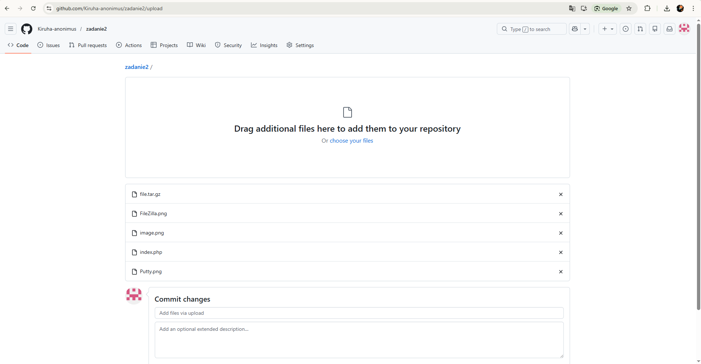
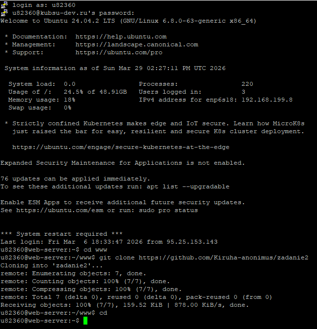
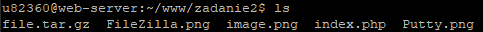
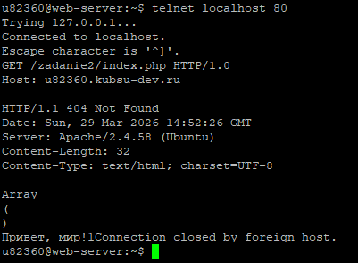
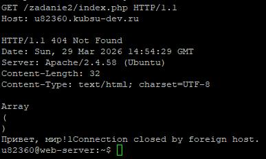
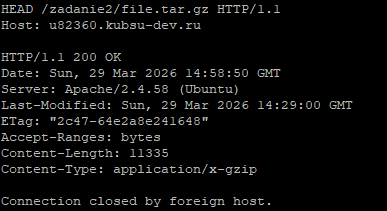
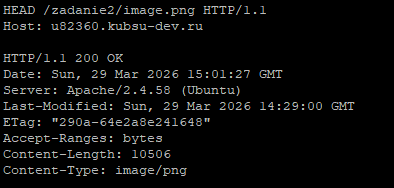
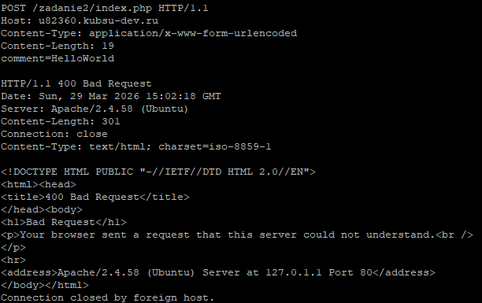
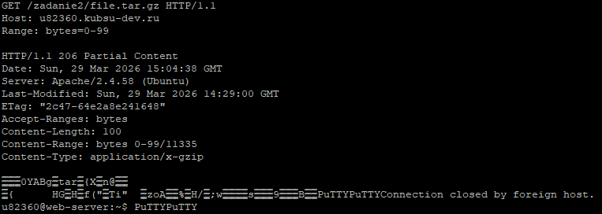
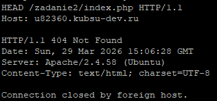

Выполнил: Копылов Кирилл, группа 22/1
Файлы загружены в репозиторий GitHub, после чего размещены на учебном веб-сервере. Доступность файлов проверена в браузере по адресу учебного домена.



Скрин первого задания показывает отправку GET-запроса к главной странице через HTTP 1.0. Сервер вернул заголовки и содержимое страницы.
GET /zadanie2/index.php HTTP/1.0
Host: u82360.kubsu-dev.ru

Скрин второго задания демонстрирует GET-запрос к той же странице через HTTP 1.1 с указанием Host. Ответ сервера подтверждает корректную работу протокола HTTP 1.1.
GET /zadanie2/index.php HTTP/1.1
Host: u82360.kubsu-dev.ru

Скрин третьего задания отображает HEAD-запрос к файлу file.tar.gz, где сервер вернул только заголовки. Основное внимание на Content-Length — размер файла в байтах.
HEAD /zadanie2/file.tar.gz HTTP/1.1
Host: u82360.kubsu-dev.ru

Скрин четвертого задания показывает HEAD-запрос к изображению image.png, и сервер возвращает только заголовки. В заголовках виден Content-Type, указывающий, что это PNG-файл.
HEAD /zadanie2/image.png HTTP/1.1
Host: u82360.kubsu-dev.ru

Скрин пятого задания демонстрирует отправку комментария через POST на index.php. Сервер принял данные и вернул страницу с результатом.
POST /zadanie2/index.php HTTP/1.1
Host: u82360.kubsu-dev.ru
Content-Type: application/x-www-form-urlencoded
Content-Length: 19
comment=HelloWorld

Скрин шестого задания отображает GET-запрос первых 100 байт файла file.tar.gz с использованием Range. Сервер вернул 206 Partial Content с указанным диапазоном.
GET /zadanie2/file.tar.gz HTTP/1.1
Host: u82360.kubsu-dev.ru
Range: bytes=0-99

Скрин седьмого задания показывает определение кодировки страницы index.php через просмотр заголовка Content-Type. В заголовках указано charset=UTF-8.
GET /zadanie2/index.php HTTP/1.1
Host: u82360.kubsu-dev.ru
